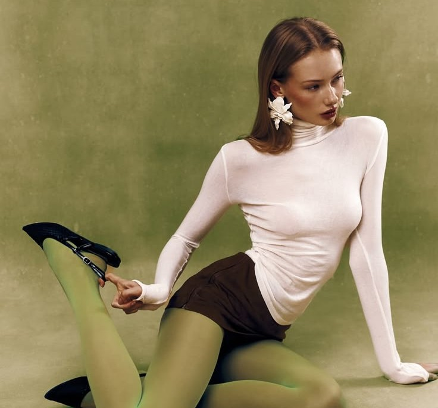

The Beauty Of Being Timeless
Now not only classy fashion is back, but time is also going backward in the fashion industry. Being back to the classic era is interesting but how would that look in the new generation era?
Fashion is interesting ones ideas are incorporated between modernity and old 90s, but how would we know it’s well-fitted in today’s world